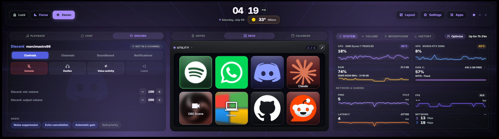
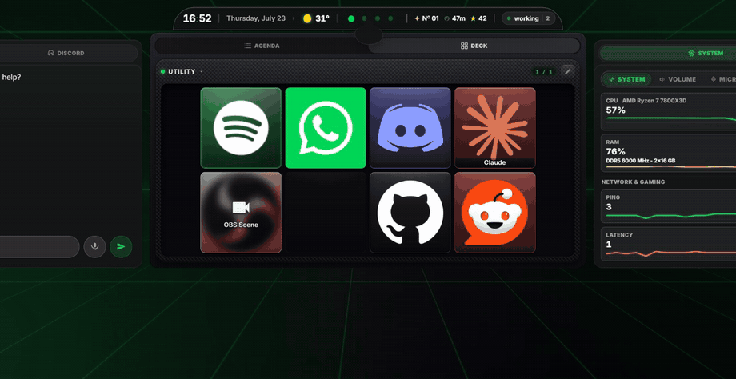
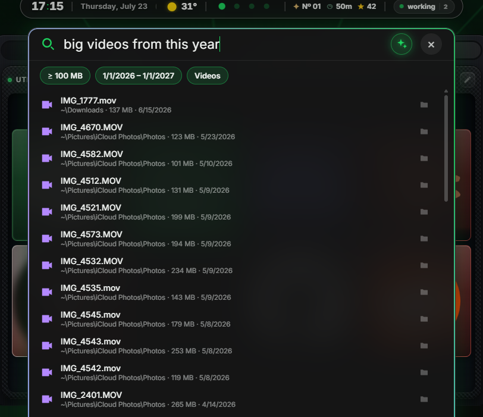
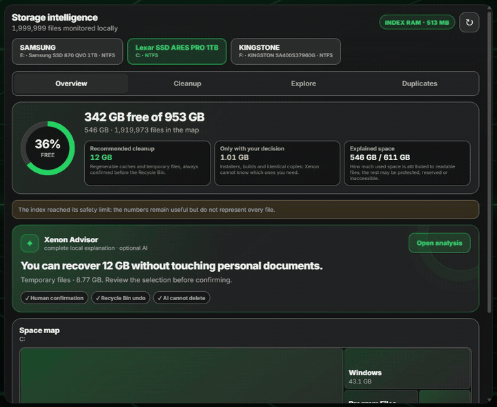
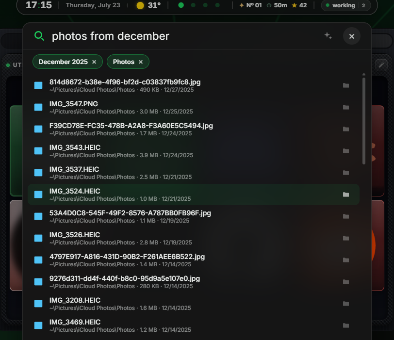
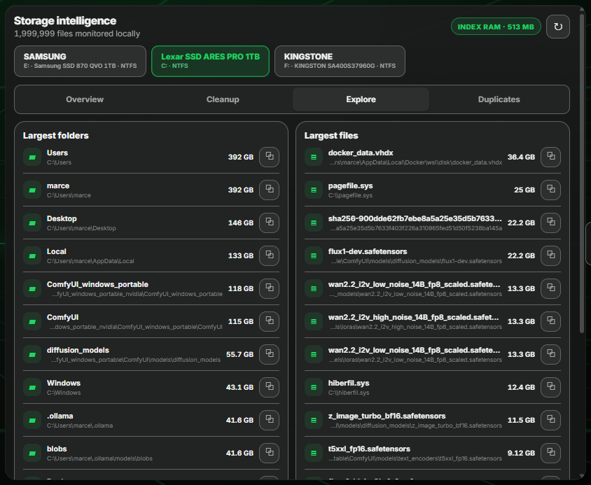
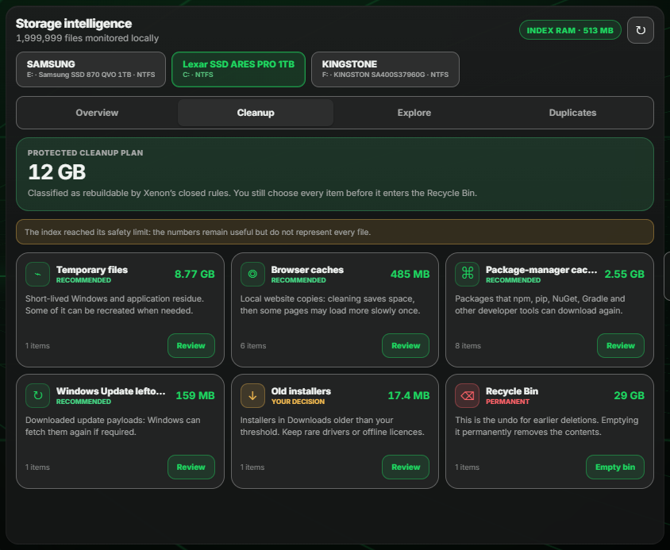

One touch dashboard for your system, your media, your RGB, a voice AI and a programmable Deck. Free and open source, and everything runs on your machine. No cloud, no account, no telemetry.
FreeOpen sourceWindows 10/11

Xenon has more than 30 widgets. These are the four that people actually use every day.
Say “Hey Xenon” and it answers. Change the track, read out your day, or have it build you a whole dashboard page. Use the AI you already pay for (Gemini, ChatGPT or Claude), or a free local stack (Ollama, Whisper, neural voices) that never touches the internet.

A grid of programmable keys inside the dashboard. Launch apps, switch OBS scenes, go live on Twitch, fire hotkeys and webhooks, control Discord voice and Spotify. Folders, multi-step macros and per-key RGB are included.

Live charts for your sensors, your network and your real in-game FPS, with 30 days of history so you can see what changed. Sensors are read on your PC. Nothing is sent anywhere.

Vitals tracks hydration, focus and posture like a game HUD. Bit is the pixel pet in the corner who notices when they drop, and keeps bothering you until you take the break. It can be sarcastic. It is never mean. It stays off until you turn it on.

Xenon keeps a list of every file on your drives and updates it the moment something changes. Search and disk space both use that list. It stays on your PC and is never uploaded anywhere.
Pull the top bar down with your finger and the search opens. Then type the way you talk: “photos from december”, “big videos from this year”, “invoice last month”. What Xenon understood shows up as small tags, and if it got one wrong you tap it off. Results come up while you type and nothing leaves your PC. If you prefer the keyboard, you can switch on a shortcut, Alt+Space, that opens the same bar over any app.

Tap the AI button in the bar, or press Ctrl+I, and you can ask in a full sentence. The AI only turns your words into a search: the looking is still done by your PC. All it gets is your sentence and today's date, no file names and no paths. If you want it to know your apps and folders too, so that “open the program for my lights” works, there is a switch in Settings that stays off until you turn it on. No AI set up? The same Enter searches offline and tells you so.

Tap a drive and the map is already there. No waiting, no scan. Tap a folder to go inside it, look at your biggest files, and find the duplicates you forgot you had. When it comes to cleaning up, Xenon only ever offers things you can afford to lose: temporary files, browser caches, old installers. You confirm each one, it all goes to the Recycle Bin, and Xenon AI can look at the numbers but cannot delete anything.

Your CORSAIR gear plus Philips Hue, WLED, Govee, LIFX and Nanoleaf, driven by CPU temperature, album art or timers. It runs alongside iCUE without fighting it, and it stays off until you switch it on.

Every widget is optional. You add the ones you want and ignore the rest. A few of them:
Now playing from any app, queue, playlists and devices.
Every fan by name and real RPM, AIO pumps and hubs included.
Live watts for CPU, GPU and, on a digital PSU, the whole PC.
Charge of your wireless mouse, keyboard, headset and Bluetooth gear.
Current conditions, 3-day forecast, hourly timeline.
Google / Outlook sync, to-dos, timers and notes.
Watchlists, price charts and a scrolling ticker.
Scores, fixtures and standings for your teams.
A clean stream from the sources and topics you pick.
Windows toasts and Discord DMs, mirrored to the Edge.
Home Assistant devices, grouped by room.
UniFi Protect feeds, live on a tile.
A real extra Windows desktop inside a tile.
Any site, fully interactive, optional ad-block.
Your phone as a remote, with Sunshine and Moonlight set up for you.





Themes, backgrounds, widgets and whole packs, shared by other Xenon users. Every one is checked by hand and all of them are free. Copy the code, paste it into Xenon, and it applies.
A theme is a palette. A widget is a folder with an HTML file in it. The guide covers both, start to finish. No build tools, no account, and you can ask the AI for help while you work.
A theme, an animated background, a custom widget, an ambient scene, or a pack that bundles them together.
Copy-paste examples for every kind of content, including Dynamic Island Live Activities, full-bar activities and takeover events.
Export it as one short code. Trade it on Discord, or submit it to the catalog with your name on it.
One file. It installs the app, the dashboard engine and the start-at-login task. There is nothing else to set up.
Using iCUE instead of the native app? Add a Web page (HTML) widget and paste this to embed the dashboard full-screen:
Xenon is free and stays free. Everyone here bought at least one coffee. Thank you.
Free, open source, and it runs on your machine. About a minute to install.